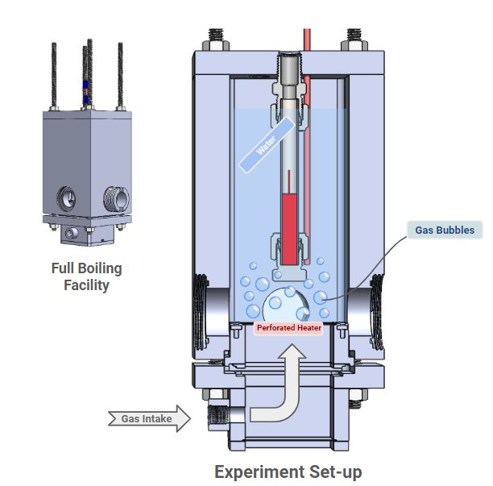
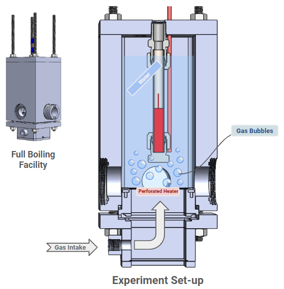
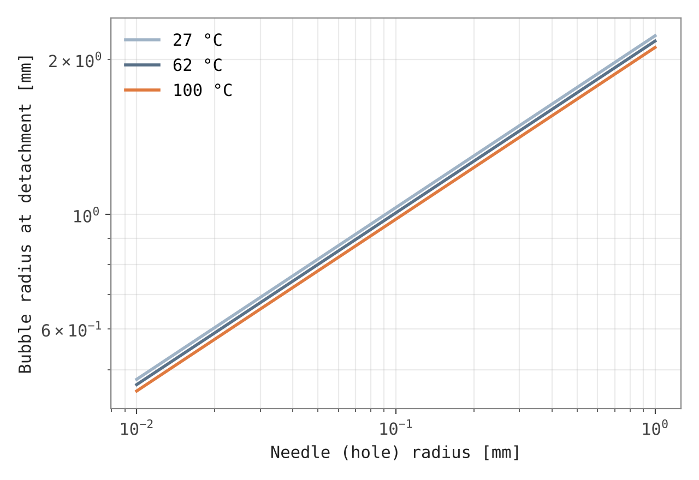
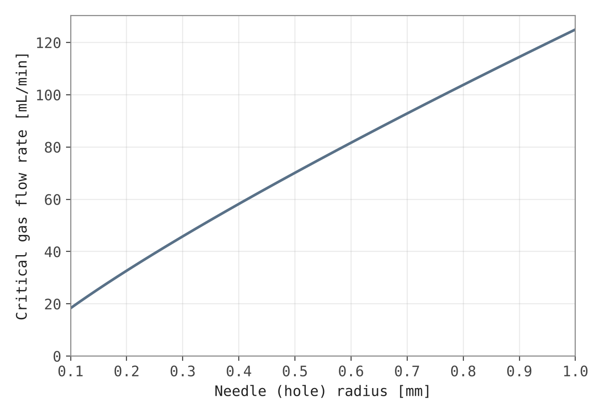
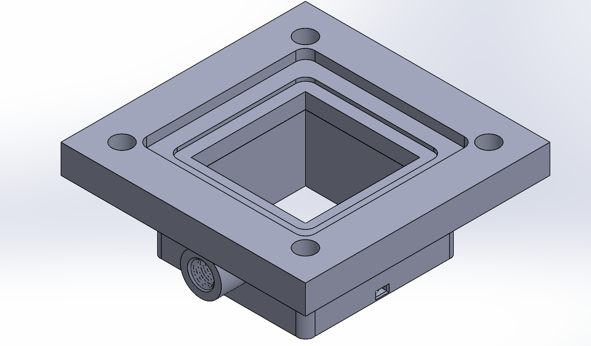
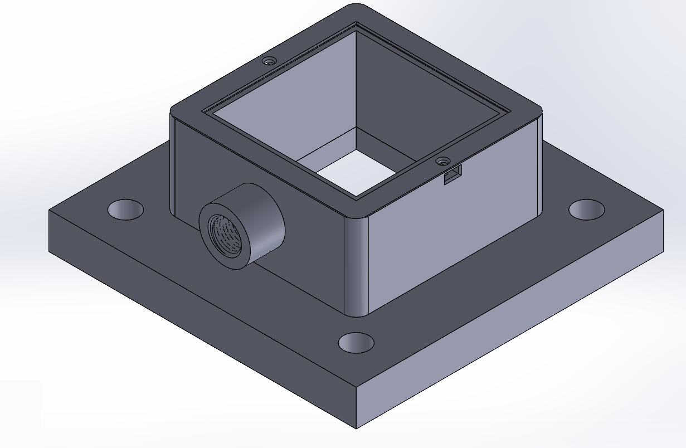
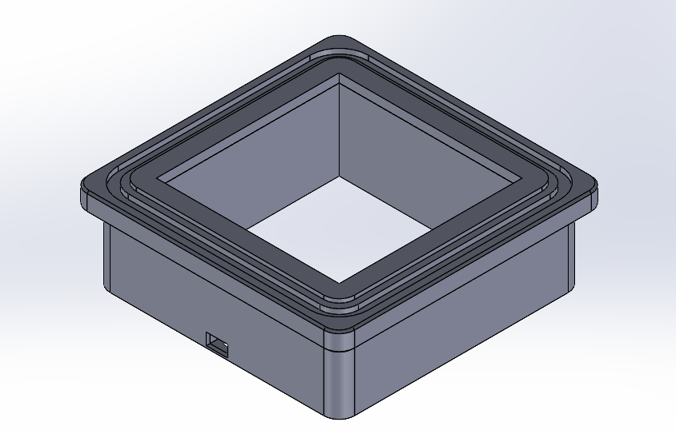
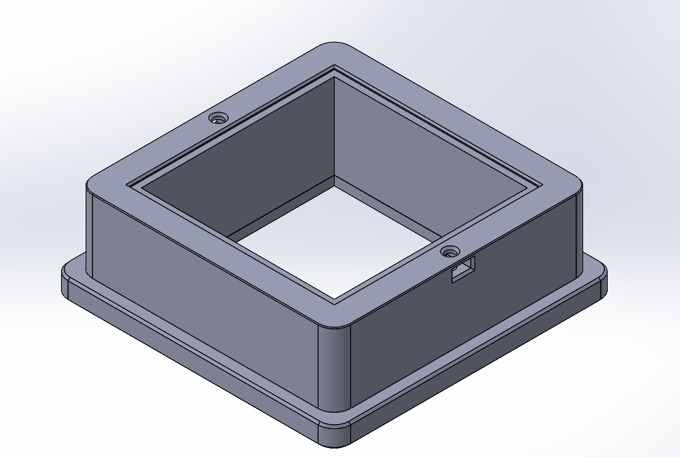

Small-scale Pool Boiling Facility

Experiment Design
Technical communication
The Red Lab, MIT
MIT Energy Initiative (MITEI) Summer Cohort 2024
Summer 2024
SOLIDWORKS
MATLAB
SLA 3D printing
I designed and fabricated an experiment vessel to investigate how bubble agitation affects the heat transfer coefficient of water. Boiling is mimicked with a perforated heater and gas input, and the vessel is built to be filmed by infrared and high-speed cameras at the same time. The project was selected for the MIT Energy Initiative's 2024 Summer Cohort, and I presented my summer progress at the MITEI Annual Research Conference.
Context/Motivation
During the summer after my freshman year, I worked as an undergraduate researcher in MIT's Red Lab. I was tasked with designing and fabricating a pool boiling facility that could mimic the bubbling seen in boiling, so the lab could isolate how bubble agitation affects the heat transfer coefficient of water.
Problem Framing
The facility had to be accessible to infrared and high-speed cameras simultaneously for data collection, while keeping water and gas from leaking into each other. I split the assembly into two main sections: a pool facility on top, with windows on each side so recording could happen from whichever angle was most convenient, and a gas compartment below.
Process
Adapting the previous facility

The lab's previous pool boiling facility could already record with ultra-high-speed and infrared cameras, but it couldn't generate bubbles. The challenge was adding bubble generation without giving up either recording capability.
Sizing the bubble generation
I wrote two MATLAB scripts to size the system. The first found the critical gas flow rate — the flow needed for bubbles to nucleate in a way that mimics boiling. The second modeled how needle radius affects bubble radius; because the relationship was fairly linear, I let manufacturing feasibility set the needle radius.
- rn
- the needle (hole) radius (0.1–1 mm)
- σ
- the surface tension of water at 50 °C (0.0679 N/m)
- ρ
- its density (988 kg/m³)
- g
- gravitational acceleration
- rn
- the needle (hole) radius (0.1–1 mm)
- σ
- the surface tension
- ρ
- the water density
- g
- gravitational acceleration


Gas compartment and heater

Gas enters the compartment through an NPT-threaded nozzle, whose tapered thread seals with minimal leakage. A sapphire bottom plate closes the compartment, and the heater is perforated sapphire, so gas can pass through it while infrared cameras still see through. O-rings and gasket sealant keep water and gas separated throughout the assembly.
Room for Improvement
Completion was limited by the outside manufacturing of the perforated sapphire heater, which we couldn't fabricate in the lab — and in hindsight, I could have used that waiting time better. Once the facility was built, we also found that the probe had to be held in place by hand during experiments; a modular clamp on top of the vessel would have made it more convenient and more stable.
Outcome
- Selected for the MITEI Summer Cohort 2024
- Flash talk and poster at the MITEI Annual Research Conference
- Captured high-speed footage of bubble formation



Reflection
This was my first research role, and it's what set my mind on mechanical engineering: it gave me a crucial introduction to hands-on work that got me hooked. Through MITEI, it also gave me a foundation in communicating research and technical work, from casual conversations to professional settings.